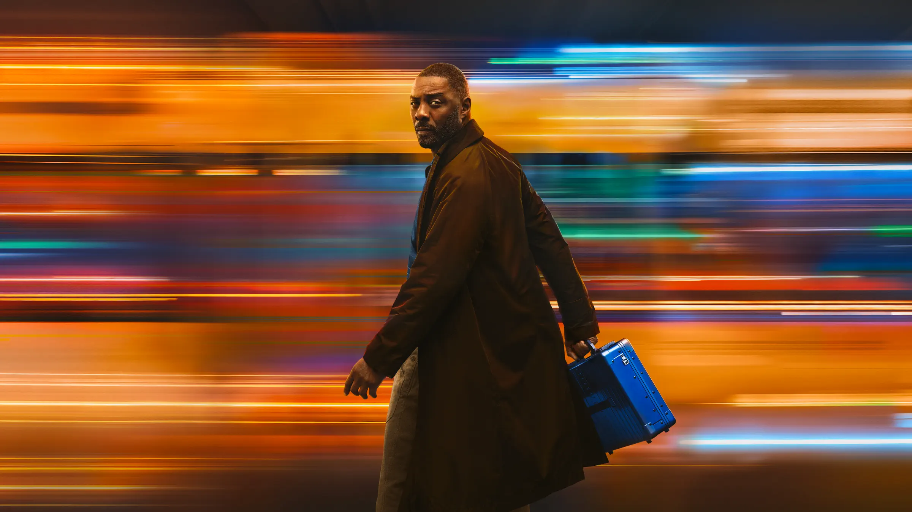
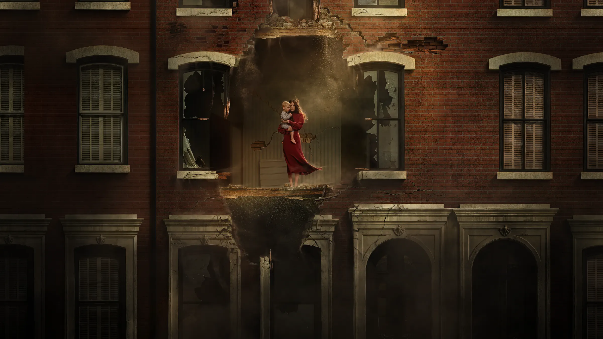
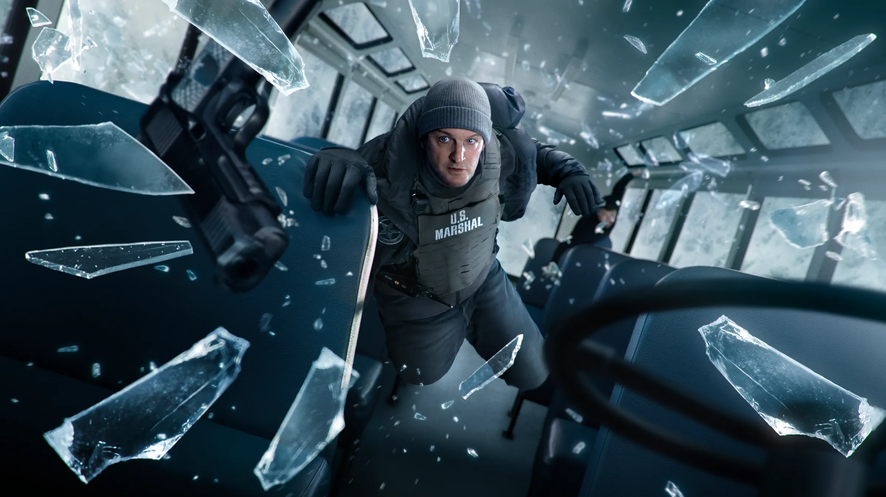
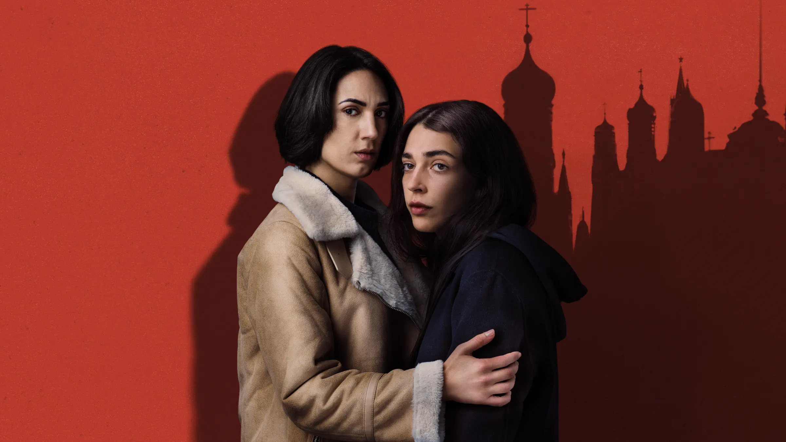
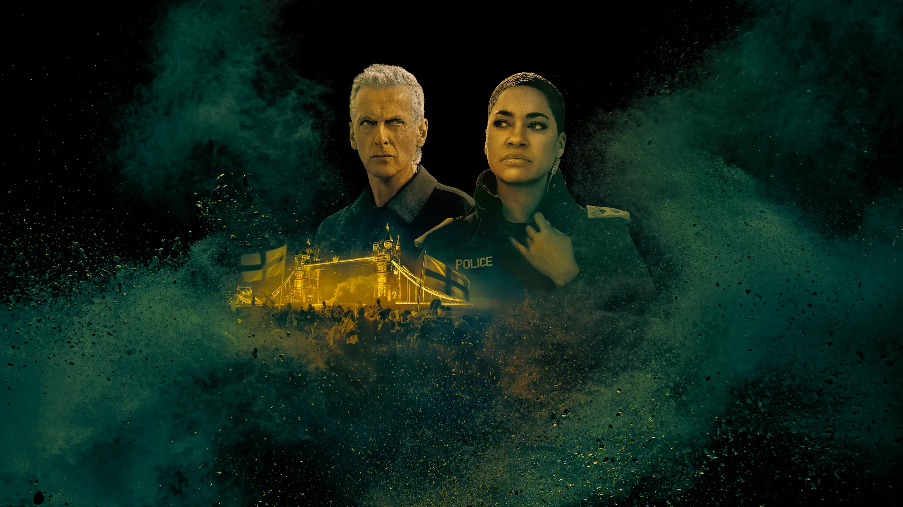
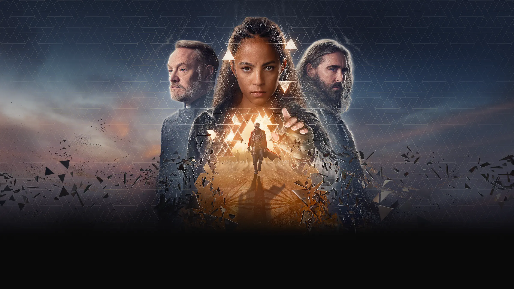
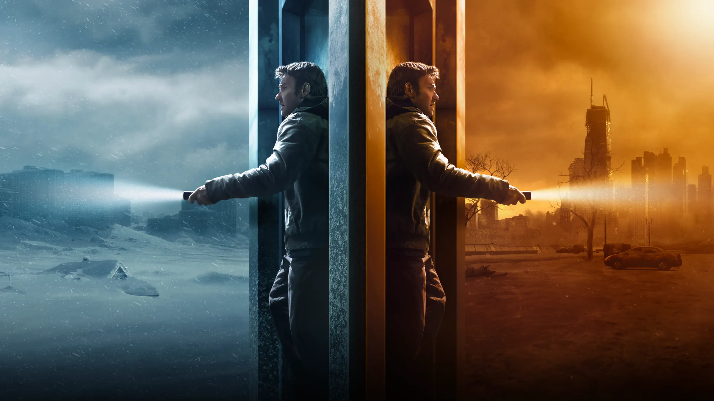
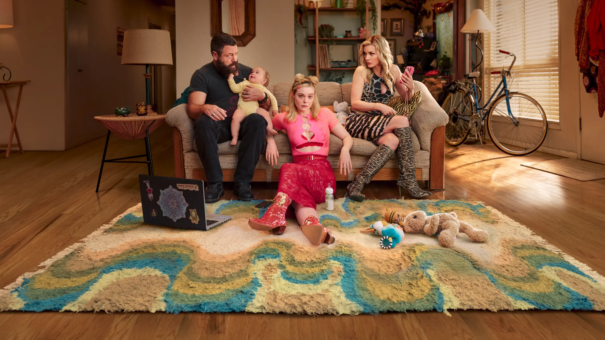
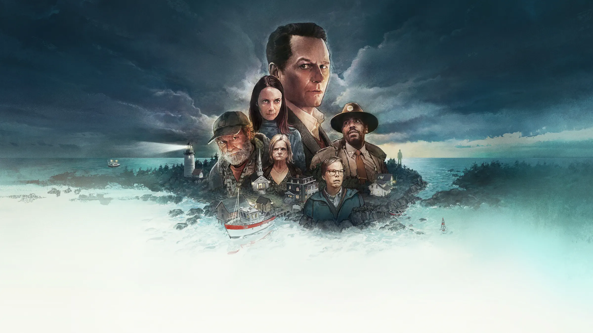
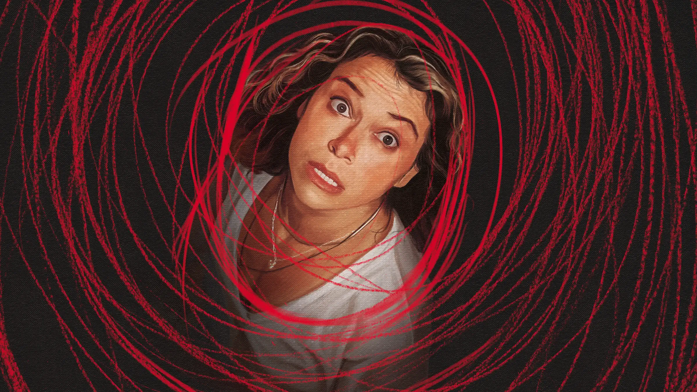

おすすめ15作品｜ジャンル別
サスペンス・スリラー
7作品
サスペンス・スリラー
セヴェランス
Severance｜2022年｜主演：アダム・スコット｜企画・原案：ダン・エリクソン｜主な監督：ベン・スティラー｜撮影監督：ジェシカ・リー・ガニェ
DRAMA RADAR評価 ★★★★★
あらすじ
仕事と私生活の記憶を外科手術によって切り離す、奇妙な制度を導入した企業ルーモン。そこで働くマークは、職場の外では仕事の記憶を持たず、職場では私生活の記憶を持たない。新たな同僚の加入や不可解な出来事をきっかけに、完璧に管理されていたはずの日常に亀裂が入り始める。
2025年9月の第77回エミー賞では、ドラマ部門の主演女優賞、助演男優賞、撮影賞などを含む計8部門で受賞。作品を象徴する緻密な映像設計も高く評価されています。
こんな人におすすめ
緻密な伏線、異様な世界観、先の読めないミステリーが好きな人。
DRAMA RADAR注目ポイント
仕事と私生活を切り離すというSF的な設定から、労働、自由意志、アイデンティティの問題へと踏み込んでいく構成が魅力の作品です。
また、ミッドセンチュリーをベースにした無機質なオフィス空間や衣装、美しい構図などの徹底したビジュアル面のこだわりが、作品の不穏な世界観と几帳面な雰囲気を助長していて、どこか不自然な企業文化が生み出す独特の不気味さに強い説得力を与えています。
この奇天烈な設定を、スタイリッシュに、面白く、独創性にあふれた作品としてとてつもないバランスで仕上げていて、間違いなく2020年代のドラマの中でも最高峰の一つです。SFや謎解きの面白さはもちろん、それ以上に「働くって何なんだっけ？」という普遍的な問いを自然に自問してしまう・自分ごととして考えさせられる、現代社会への風刺としても読み解ける不思議な磁場も持つ作品です。
Apple TVで見る →
サスペンス・スリラー
窓際のスパイ
Slow Horses｜2022年｜主演：ゲイリー・オールドマン｜原作：ミック・ヘロン｜シリーズ脚本・製作総指揮：ウィル・スミス｜主な監督：ジェームズ・ホーズ、ソール・メッツスタインほか
DRAMA RADAR評価 ★★★★★
あらすじ
英国情報局MI5で失態を犯したエージェントたちが送り込まれる、通称「スラウハウス」。落ちこぼれの集まりと見なされる彼らを率いるのは、毒舌で無愛想なジャクソン・ラム。閑職に追いやられたはずのチームは、英国を揺るがす危険な事件に巻き込まれ、情報機関の内部に渦巻く陰謀へと踏み込んでいく。
ゲイリー・オールドマン主演、ミック・ヘロンの小説シリーズを原作とするスパイドラマ。2024年のエミー賞ではドラマシリーズ脚本賞を、2026年には監督賞を受賞するなど、脚本と演出の両面で高い評価を得ています。
こんな人におすすめ
英国らしいブラックユーモアと、駆け引きの効いた本格スパイスリラーを楽しみたい人。
DRAMA RADAR注目ポイント
こちらも間違いなく2020年代のドラマの中でも最高峰の一つ。とにかくまずは1話だけでも観てほしい作品です。ハマれば一気にのめり込みます。有能とは言い難いエージェントたちが、時に本部のエリート以上の働きを見せる痛快さ。ゲイリー・オールドマン演じるジャクソン・ラムの圧倒的な存在感と、シニカルでキレッキレの会話劇が作品を際立たせています。
スラウハウスの面々も癖が強かったり、性格が悪かったりもするんですが、ミスの仕方が妙にリアルで、全員人間味にあふれています。笑えるシーンもあったかと思うと、次のシーンではスパイもののヒリヒリする緊張感や、あっと驚くぐらいシリアスな結果が待ち受けていたり、脚本や演出などストーリーの緻密さも素晴らしいです。人物同士の掛け合いに引き込まれる異色の諜報ドラマです。
Apple TVで見る →
サスペンス・スリラー
ハイジャック
Hijack｜2023年｜主演：イドリス・エルバ｜企画・脚本：ジョージ・ケイ｜共同企画・主な監督：ジム・フィールド・スミス

DRAMA RADAR評価 ★★★★☆
あらすじ
ドバイからロンドンへ向かう旅客機が、飛行中に武装グループに乗っ取られる。乗り合わせた企業交渉人サム・ネルソンは、乗客たちの命を守るため、犯人との危険な駆け引きを開始。一方、地上でも異変を察知した関係者たちが動き出す。刻々と状況が変わる密室で、サムは最悪の事態を回避できるのか。
主演は『THE WIRE／ザ・ワイヤー』『刑事ジョン・ルーサー』で知られるイドリス・エルバ。『Lupin／ルパン』のジョージ・ケイらが手掛け、約7時間のフライトをリアルタイム形式で描く全7話のスリラーです。
こんな人におすすめ
限られた空間で展開する心理戦、時間制限のあるサスペンスが好きな人。
DRAMA RADAR注目ポイント
こちらは特にシーズン1が非常におすすめです（正直シーズン2は失速します）。航空機内の事件と地上の対応を並行して描くことで、とにかくハラハラ・ワクワクな緊張感が途切れません。特徴は主人公が武力ではなく交渉術を武器にしていること。言葉の選び方や相手の心理を読む駆け引きが見どころです。毎話、展開が気になる終わり方で、ホラーやグロ要素もなく、シーズン1は約7時間のフライトを軸に進む、テンポのよい見応えのあるスリラーとなっているので、とにかく一気見したいドラマを探している方にもおすすめです。
Apple TVで見る →シーズン2の作品ページ →
サスペンス・スリラー
サーヴァント ターナー家の子守
Servant｜2019年｜出演：ローレン・アンブローズ、トビー・ケベル、ルパート・グリント｜製作総指揮：M・ナイト・シャマラン

DRAMA RADAR評価 ★★★★☆
あらすじ
フィラデルフィアに暮らすターナー夫妻は、ある悲劇をきっかけに深い悲しみを抱えていた。そんな一家のもとに、赤ん坊ジェリコの世話をするため、若い住み込みの子守リアンがやってくる。しかし、彼女の存在を境に、家の中では説明のつかない奇妙な出来事が起こり始める。夫婦が抱える秘密とリアンの正体をめぐり、平穏だったはずの日常が少しずつ崩れていく。
『シックス・センス』などで知られるM・ナイト・シャマランが製作総指揮を務める心理スリラー。
こんな人におすすめ
閉鎖的な空間でじわじわと不安が高まる、心理ホラーや不条理なミステリーが好きな人。
DRAMA RADAR注目ポイント
Apple TV+のサービス初期を代表する話題作。子守リアンをはじめ登場人物が全員不気味。行動の動機もわからないまま展開していくナイト・シャマランらしさ満載です。一軒の家を中心に展開する物語でありながら、次々と謎が積み重なっていく異様な密度が楽しめます。登場人物の言動や何気ない生活風景にまで不穏さが漂い、何が現実で、誰の言葉を信じればいいのか分からなくなっていきます。
さらに、家の内部を使った映像表現。狭い通路、階段、食卓などの日常的な場所が、カメラの位置や構図によって不気味な空間に変わります。緻密な伏線回収があるような、きれいなストーリーではないですが、派手な恐怖演出だけに頼らず、悲しみや信仰、家族の歪みをじっくり描く、独特の後味を持ったスリラーです。
Apple TVで見る →
サスペンス・スリラー
ラスト・フロンティア ～最果てのアラスカ～
The Last Frontier｜2025年｜出演：ジェイソン・クラーク、ヘイリー・ベネット、ドミニク・クーパー

DRAMA RADAR評価 ★★★★☆
あらすじ
アラスカの荒野で、凶悪犯を乗せた輸送機が不審な墜落事故を起こす。機内にいた多数の囚人が逃走し、周辺地域は一気に危機的状況に陥る。地元の連邦保安官フランク・レムニックは、住民を守るため、過酷な自然環境の中で逃亡犯の追跡を開始。しかし、事故の裏には何者かの計画が潜んでいる可能性が浮上し、事件は単なる脱走劇では済まなくなっていく。
ジェイソン・クラーク主演。アラスカの大自然を舞台に、逃亡犯の追跡と陰謀が交錯するアクションスリラー。
こんな人におすすめ
極限状況での追跡劇、犯罪サスペンス、スケールの大きなアクションが好きな人。
DRAMA RADAR注目ポイント
航空機の墜落によって凶悪犯たちが一斉に解き放たれるという、冒頭から引きの強い設定が魅力で、序盤が特におすすめです。追う側も追われる側も逃げ場の少ないアラスカの大自然が、事件そのものの危険性をさらに高めています。
広大な雪原や山岳地帯を背景にしたスケール感と、次々に発生するトラブルが見どころ。単なる脱獄犯の追跡にとどまらず、徐々に事故の背後にある陰謀も絡んでくるため、アクションと謎解きの両方を楽しめる作品です。
Apple TVで見る →
サスペンス・スリラー
アンコンディショナル
Unconditional｜2026年｜出演：Liraz Chamami、Talia Lynne Ronn、ジェーニャ・ドディナ

DRAMA RADAR評価 ★★★★☆
あらすじ
娘ガリとの海外旅行を楽しんでいた母親オルナ。しかし、モスクワの空港でガリが麻薬所持の疑いで逮捕され、旅は一転して悪夢へと変わる。娘の無実を信じるオルナは、異国の司法制度や複雑な政治的事情に翻弄されながら、解放に向けて奔走する。ところが、調べを進めるうちに、娘が母親に隠していた秘密が少しずつ明らかになっていく。
母親の愛情と、国家をまたぐ事件の不透明さを描くサスペンスドラマ。
こんな人におすすめ
国家間の駆け引きや政治的な陰謀、家族の秘密が絡み合う緊迫したサスペンスが好きな人。
DRAMA RADAR注目ポイント
旅先で娘が突然逮捕されるという、誰にでも起こり得るような恐怖から始まり（そのシーンが異常にリアルで怖いです）、次第に個人の力ではどうにもならない大きな問題へと発展していく構成が特徴です。
娘を救いたい母親の必死さと、娘自身が抱える秘密。その両方が物語を動かしていくため、単純な救出劇には収まりません。異国の地で情報も味方も限られる状況が、登場人物の焦りや疑心暗鬼を際立たせる作品です。目立った作品ではなかったですが、一気見できる隠れた良作です。
Apple TVで見る →
サスペンス・スリラー
クリミナル・レコード
Criminal Record｜2024年｜出演：ピーター・キャパルディ、クシュ・ジャンボ

DRAMA RADAR評価 ★★★★☆
あらすじ
ロンドン警視庁の若手刑事ジューン・レンカーは、匿名の緊急通報をきっかけに、過去の殺人事件の捜査に疑問を抱く。調査を進めるうちに、当時の捜査を指揮したベテラン刑事ダニエル・ヘガティと対立することに。真実を追おうとするジューンと、自らの捜査に強い自信を持つヘガティ。世代も立場も異なる二人の刑事の衝突を通して、警察組織の権力関係や正義のあり方が浮かび上がってくる。
『ドクター・フー』などで知られるピーター・キャパルディと、『グッド・ファイト』のクシュ・ジャンボが主演する犯罪スリラー。
こんな人におすすめ
英国クライムドラマ、警察組織の内部対立、じっくりと真相に迫る捜査ミステリーが好きな人。
DRAMA RADAR注目ポイント
派手なアクションよりも、二人の刑事の対立や心理的な駆け引きを中心に描く、重厚な英国クライムドラマです。なので若干の地味さはありつつも、匿名の通報という小さなきっかけから、過去の事件と警察組織の問題が徐々につながっていく展開は見応えあります。
ピーター・キャパルディ演じるヘガティの威圧感も見どころで、クシュ・ジャンボ演じるジューンの粘り強さとぶつかり合うことで、会話における緊張感も生まれて、それがまた良いんです。正義を追求する立場にある刑事たちが、必ずしも同じ正義を共有していないという複雑さも大人な感じで良いです。
Apple TVで見る →
おすすめ15作品｜ジャンル別
SF
5作品
SF
サイロ
Silo｜2023年｜主演：レベッカ・ファーガソン｜原作：ヒュー・ハウイー｜企画・ショーランナー：グレアム・ヨスト
DRAMA RADAR評価 ★★★★★
あらすじ
有毒な大気に覆われ、人類が地上で暮らせなくなった未来。生き残った人々は、地下深くに建設された巨大な施設「サイロ」で生活していた。そこには厳格な規則が存在し、外の世界について疑問を抱くことさえ危険視されている。そんな中、不可解な死をきっかけに、機械部門で働くジュリエットはサイロの成り立ちや外界に隠された秘密を追い始める。しかし、真実に近づくほど、住民たちが信じてきた世界の常識そのものが揺らいでいく。
ヒュー・ハウイーのSF小説を原作に、レベッカ・ファーガソンが主演するディストピア・ミステリー。2024年の英国アカデミー賞（BAFTA）テレビ・クラフト賞では、美術賞とオリジナル音楽賞の2部門を受賞。地下に広がる巨大な世界を表現した美術設計や、作品の不穏な雰囲気を支える音楽も高く評価されています。
こんな人におすすめ
ディストピアSF、閉鎖空間のミステリー、巨大な陰謀や世界の秘密を解き明かす物語が好きな人。
DRAMA RADAR注目ポイント
地下に何千人もの人々が暮らす巨大なサイロという、設定だけでもワクワクするSFミステリー。階層ごとに異なる生活環境や、社会の秩序を維持するための厳格なルールなど、生活感がリアルで世界観の作り込みが素晴らしいです。
「外の世界はどうなっているのか」「外は本当に危険なのか」「なぜこの規則が存在するのか」という疑問が、一つ暴かれたら一つ新たな謎につながっていくという、好奇心がくすぐられっぱなしの展開。単なるサバイバルではなく、情報統制や階級社会の危うさが描かれており、深みのある作品でもあります。
レベッカ・ファーガソン演じるジュリエットの影を持ちながら求心力もあるキャラクターの存在感も大きく、閉塞感のある世界の中で真実を追い続ける姿に引き込まれます。重厚なSFと謎解きの両方を楽しみたい方には、特におすすめしたい作品です。
Apple TVで見る →
SF
プルリブス
Pluribus｜2025年｜主演：レイ・シーホーン｜企画・製作総指揮：ヴィンス・ギリガン
DRAMA RADAR評価 ★★★★★
あらすじ
世界中の人々に、突如として不可解な変化が起こる。人々は幸福に満ち、争いを避け、互いを思いやるようになるが、その異様な平穏の裏には、人類のあり方そのものを変えてしまう重大な秘密が隠されていた。
そんな世界で、変化の影響を受けなかった数少ない人間の一人が、気難しい小説家キャロル・スターカ。周囲の人々が幸福を当然のものとして受け入れる中、彼女だけはその状況に強い違和感を抱き、世界に何が起きたのかを探ろうとする。『ブレイキング・バッド』『ベター・コール・ソウル』のヴィンス・ギリガンが手掛け、レイ・シーホーンが主演する独創的なSFドラマ。
こんな人におすすめ
常識が覆るSF設定、奇妙な世界観、ブラックユーモア、哲学的なテーマを含むドラマが好きな人。
DRAMA RADAR注目ポイント
まず設定だけでめちゃくちゃ気になり、ヴィンス・ギリガン×レイ・シーホーンということで、見るしかない作品。内容も素晴らしかったです。「世界中の人々が幸せになったら、それは本当に理想の世界なのか？」という、非常に奇妙かつ面白い問いから始まります。誰もが親切で、争いがなく、他人を思いやる。一見すると素晴らしい社会なのに、なぜかじわじわ冷や汗かくような不気味さが漂っている。この違和感がおしつけがましくなく見事に演出されていて秀逸です。
ヴィンス・ギリガンらしい、何気ない会話や行動をじっくりかつカラッと描く演出も特徴的。奇抜な設定でありながら、登場人物の心理や細かなリアクションに説得力があり、先の読めない展開はやはり世界最高峰のクリエイターの地力を感じます。
そして、レイ・シーホーン演じるキャロルの存在感。世界中が幸福に包まれる中で、ただ一人怒り、疑い、抵抗し続ける姿は、滑稽でもあり、どこか切実でもあります。SFでありながら、人間の自由や幸福とは何かを考えさせる、非常に独創的でこころに残る作品でおすすめです。
Apple TVで見る →
SF
フォー・オール・マンカインド
For All Mankind｜2019年｜主演：ジョエル・キナマン｜企画：ロナルド・D・ムーア、マット・ウォルパート、ベン・ネディヴィ
DRAMA RADAR評価 ★★★★★
あらすじ
1969年、人類初の月面着陸を成功させたのはアメリカではなく、ソビエト連邦だった。歴史を変えるこの出来事をきっかけに、アメリカとソ連の宇宙開発競争は終わるどころか、さらに激化していく。NASAの宇宙飛行士や技術者たちは、国家の威信を懸けた新たな挑戦に身を投じ、それぞれの家族や人生も大きく変化していく。
「もし宇宙開発競争が終わらなかったら」という仮説から始まり、実際の歴史とは異なる人類の未来を描く、壮大な歴史改変SFドラマ。『バトルスター・ギャラクティカ』などで知られるロナルド・D・ムーアが企画に参加している。
こんな人におすすめ
宇宙開発、歴史改変SF、政治ドラマ、長い時間をかけて人物と社会の変化を描く群像劇が好きな人。
DRAMA RADAR注目ポイント
「ソ連が先に月面着陸を成功させていたら」という、たった一つの歴史の分岐点から、説得力のある物語を作り上げている力作です。実際の歴史や宇宙開発の技術を踏まえながら、架空の出来事を積み重ねていくため、単なるSFの空想ではなく、本当に存在したかもしれないもう一つの歴史を見ているような感覚になります。
宇宙飛行士たちの挑戦だけでなく、家族関係、政治、社会制度、時代ごとの価値観の変化まで描く点も魅力。壮大なテーマですが、中心は人間ドラマですのでヒューマンドラマ好きにもおすすめ。また、2026年にはスピンオフ作品『スター・シティ（Star City）』も配信開始。本編では主にアメリカ側から描かれた宇宙開発競争を、今度はソ連側の宇宙飛行士や技術者、情報機関の視点から描く作品で、同じ歴史改変の世界を別の角度からも楽しめます。
Apple TVで見る →
SF
ファウンデーション
Foundation｜2021年｜主演：ジャレッド・ハリス、リー・ペイス、ルー・ロベル｜原作：アイザック・アシモフ｜企画：デヴィッド・S・ゴイヤー、ジョシュ・フリードマン

DRAMA RADAR評価 ★★★★☆
あらすじ
はるか未来、人類は銀河全体に広がる巨大な帝国を築き上げていた。しかし、数学者ハリ・セルダンは、独自の理論「心理歴史学」によって、繁栄を極める銀河帝国がいずれ崩壊し、その後に長い暗黒時代が訪れることを予測する。
文明の知識を保存し、人類の未来を守るため、セルダンは「ファウンデーション」と呼ばれる壮大な計画を立ち上げる。一方、帝国を支配する皇帝たちは、その予言を自らの権力を脅かすものとして警戒する。アイザック・アシモフのSF文学を原作に、文明の興亡と人類の未来を描くスペースオペラ。
こんな人におすすめ
壮大な宇宙SF、政治的な駆け引き、文明や歴史をテーマにした知的な物語が好きな人。
DRAMA RADAR注目ポイント
銀河帝国の崩壊と、その後の人類の未来という、とてつもなく大きなテーマを扱うSF大作です。何より圧倒されるのは、巨大な宇宙船、未来都市、惑星ごとに異なる文化など、映像化された世界のスケール感。美術や視覚効果の完成度が高く、映画並みの映像体験を味わえます。
一方で、物語の中心にあるのは、数学によって未来を予測しようとする人間と、権力を維持しようとする帝国との対立です（正直、割と複雑ですがそれもSFあるあるということで）。運命は決まっているのか、意思で変えられるのか。壮大な設定の中に普遍的な問いが組み込まれており、奥行きもあります。
登場人物や勢力が多く、序盤は少し難解に感じるかもしれませんが、世界観を理解するほど面白さが増していくタイプの作品です。じっくり考えながらSFの世界に没入したい人におすすめです。
Apple TVで見る →
SF
ダーク・マター
Dark Matter｜2024年｜主演：ジョエル・エドガートン、ジェニファー・コネリー｜原作・企画：ブレイク・クラウチ

DRAMA RADAR評価 ★★★★☆
あらすじ
シカゴで物理学の教授として働くジェイソン・デスセンは、妻と息子に囲まれ、穏やかな生活を送っていた。ところがある夜、何者かに突然拉致され、目を覚ますと、自分の知っている世界とは微妙に異なる現実にいた。
そこでは、ジェイソン自身の人生がまったく別の道をたどっており、愛する家族との生活も存在していない。元の世界に戻ろうとする彼は、無数の可能性が交差する現実の中で、自分の人生を取り戻すための危険な旅に出る。ブレイク・クラウチの同名ベストセラー小説を原作とするSFスリラー。ジョエル・エドガートンとジェニファー・コネリーが共演する。
こんな人におすすめ
並行世界、もう一人の自分、人生の選択をテーマにしたSFサスペンスが好きな人。
DRAMA RADAR注目ポイント
「もしあのとき別の選択をしていたら、今の人生はどうなっていたのか」という、誰もが一度は考える問いを、並行世界というSFの設定で描く作品です。
次々と異なる現実に迷い込み、それぞれの世界の登場人物たちが複雑な接点でつながっていくという、全く先の読めない展開で、これぞスリラーという面白さがあります。一方で、物語が進むほど、成功した人生と幸せな人生は同じなのか、自分らしさとは何なのか、といったテーマが浮かび上がってきます。
ジョエル・エドガートンが演じるジェイソンの必死さと天然？な行動、ジェニファー・コネリー演じる妻ダニエラの存在が、SF的な設定に感情的な説得力を与えています。難解な理論を理解しなくても楽しめるので、パラレルワールドとかSFスリラーを楽しみたい人におすすめです。
Apple TVで見る →
おすすめ15作品｜ジャンル別
ヒューマン・コメディ・ドラマ
3作品
ヒューマン・コメディ・ドラマ
マーゴのマネートラブル
Margo's Got Money Troubles｜2026年｜主演：エル・ファニング｜出演：ミシェル・ファイファー、ニック・オファーマン、ニコール・キッドマン｜原作：ルーフィ・ソープ｜企画・脚本：デヴィッド・E・ケリー

DRAMA RADAR評価 ★★★★☆
あらすじ
大学を中退し、幼い子どもを抱えて生活することになったマーゴ。作家を夢見ていた彼女は、子育てと生活費の支払いに追われ、経済的な窮地に立たされていく。母親は元ウェイトレス、父親は元プロレスラーという一風変わった家族との関係も複雑。頼れるものが限られる中、マーゴは自分の知恵と発想を武器に、思いもよらない方法で生活を立て直そうとする。
ルーフィ・ソープの小説を原作に、エル・ファニング、ミシェル・ファイファー、ニック・オファーマン、ニコール・キッドマンらが出演。『ビッグ・リトル・ライズ』のデヴィッド・E・ケリーが手掛けるコメディドラマで、シーズン2への更新も決定。
こんな人におすすめ
型破りな家族ドラマ、ブラックユーモア、くよくよしない登場人物が好きな人。
DRAMA RADAR注目ポイント
生活費も足りない、子育ても大変、家族関係も一筋縄ではいかない。普通ならめげてしまいそうな、笑えない状況を、ユーモアとたくましさのある物語に仕上がっており、説教臭さもなく、見ていて楽しくかつホロっとさせられる良作です。
主人公マーゴが、世間一般の「正しい生き方」や「まともな仕事」という価値観に従わず、自分なりの方法で現実を切り開こうとするところは胸が熱くなります。母親としての責任、経済的な自立、周囲からの偏見といった現実的なテーマを扱いながら、物語はからっと軽快に進んでいくのも良いです。
エル・ファニングのキュートだけどラフでパワフルな存在感は圧倒的ですが、ミシェル・ファイファー、ニック・オファーマン、ニコール・キッドマンという豪華な顔ぶれも見どころ。個性豊かな登場人物たちを楽しみながら、現代社会の生きづらさについても考えさせられる作品です。
Apple TVで見る →DRAMA RADARの作品ページ →
ヒューマン・コメディ・ドラマ
ウィドウズ・ベイ
Widow's Bay｜2026年｜主演：マシュー・リス｜出演：ケイト・オフリン、スティーヴン・ルート｜企画・脚本：ケイティ・ディポルド｜主な監督：ヒロ・ムライ

DRAMA RADAR評価 ★★★★☆
あらすじ
ニューイングランド沖に浮かぶ小さな島「ウィドウズ・ベイ」。観光客もほとんど訪れないこの島で、市長トム・ロフティスは町の再生に頭を悩ませていた。島民たちは古くから伝わる呪いを恐れ、観光振興にも非協力的。ようやく観光客が訪れ始めた矢先、迷信だと思われていた不気味な出来事が次々と現実に......。
『ジ・アメリカンズ』のマシュー・リスが主演し、『アトランタ』『THE BEAR』のヒロ・ムライらが監督を務めるホラーコメディ。2026年の第78回エミー賞では、コメディ部門の作品賞など計14部門を受賞しました。
こんな人におすすめ
不気味な田舎町や島のミステリー、ブラックコメディ、少し奇妙なホラーが好きな人。
DRAMA RADAR注目ポイント
「島には呪いがある」と信じる住民たちと、町を発展させたい市長。その妙にリアルないざこざだけでも十分に面白いのに、徐々に本当に奇妙な出来事が起こり始めるという、ホラーとコメディの組み合わせが絶妙でした。
登場人物たちのどこか間の抜けた言動や、閉鎖的な島社会の人間関係が笑いを生んでクセになる世界観ですが、不気味な出来事が起きる場面で、空気が一変します。緩急がすごい。
今や大注目のクリエイターとなったヒロ・ムライをはじめとする映像演出にも注目。穏やかな海辺の風景や古びた建物が、突然不穏な表情を見せるなど、独特の雰囲気が作り込まれています。単なるホラーでも、単なるコメディでもない、何を見ているか分からなくなる不思議な体験をしたい方におすすめです。
Apple TVで見る →DRAMA RADARの作品ページ →
ヒューマン・コメディ・ドラマ
マキシマム・プレジャー 最高の快楽、保証します
Maximum Pleasure Guaranteed｜2026年｜主演：タチアナ・マスラニー｜出演：ジェイク・ジョンソン、マーレイ・バートレット｜企画・脚本：デヴィッド・J・ローゼン｜主な監督：デヴィッド・ゴードン・グリーン

DRAMA RADAR評価 ★★★★☆
あらすじ
離婚したばかりのシングルマザー、ポーラ・サンダーズは、親権争いや子育てに追われる日々を送っていた。そんなある日、衝撃的な犯罪現場を目撃したことから、彼女の日常は一変。自ら真相を探り始めるが、脅迫や殺人、そして思いもよらない陰謀へと巻き込まれていく。家庭の問題にも振り回されながら、ポーラは危険な事件の真相を追い続ける。
『オーファン・ブラック 暴走遺伝子』のタチアナ・マスラニーが主演するブラックコメディと犯罪スリラーの融合ドラマ。1話約30分の構成で、シーズン2への更新も決定しています。
こんな人におすすめ
ブラックコメディ、予測不能な犯罪サスペンス、クセ強な登場人物が好きな人。
DRAMA RADAR注目ポイント
離婚、親権争い、子育てと、ただでさえ問題だらけの日常に、殺人事件や陰謀まで絡んでくるという、展開の読めない作品です。深刻な状況なのに、緊張感のない会話が始まったり、さらなる突拍子もない出来事が重なったりと、緊張感と笑いが入り混じる独特のテンポをぜひ見て欲しいです。
タチアナ・マスラニー演じるポーラのキャラクターも魅力的です。冷静な探偵でも、特別な能力を持ったヒーローでもなく、ハイプレッシャーに押しつぶされておかしくない超ド級のトラブルが重なる中、プッツンしながらガンガン行動する姿......たくまし過ぎます。見ているだけで元気出ます。
1話30分前後という短尺も、作風を助長し、テンポよく楽しめます。重厚な犯罪ドラマとはまた違う、奇妙でブラックなスリラーを探している人におすすめです。
Apple TVで見る →DRAMA RADARの作品ページ →